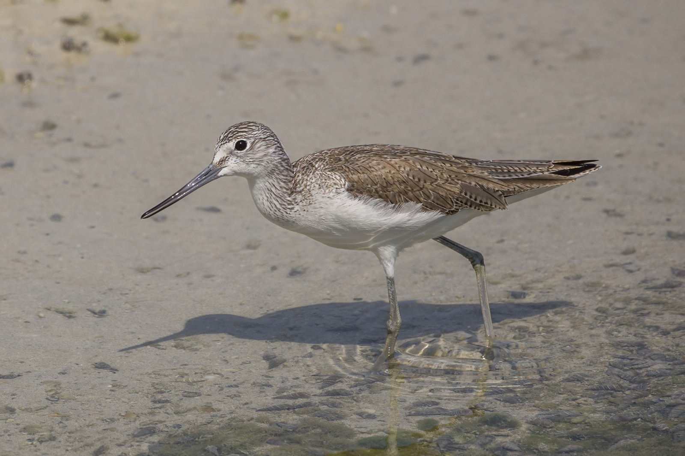

من السواحل إلى البرك الداخلية، يجمع هذا الطائر المهاجر بين ساقين مخضرتين ومنقار مائل قليلًا إلى أعلى.
الاسم والتصنيف
الطيطوي أخضر الساق، واسمه العلمي Tringa nebularia، طائر خوّاض من فصيلة الطيطويات والشناقب Scolopacidae، ضمن رتبة الزقزاقيات Charadriiformes. اسمه الإنجليزي Common Greenshank والفرنسي Chevalier aboyeur. وهو نوع مختلف عن الطيطوي الأخضر Tringa ochropus؛ تشابه الاسمين لا يعني أنهما طائر واحد.
كيف نتعرّف إليه؟
له ساقان طويلتان بلون أخضر رمادي أو زيتوني، ومنقار قوي نسبيًا يميل طرفه قليلًا إلى أعلى. يبدو في الشتاء رماديًا من الأعلى وأبيض من الأسفل، مع تخطيط خفيف على الرأس والعنق. يزداد التباين والتنقيط الداكن في حلة التكاثر، بينما تحمل ريشات ظهر اليافع حواف فاتحة واضحة.
لا يكفي لون الساقين وحده للتعرف إليه. فالطيطوي البطائحي Tringa stagnatilis أصغر وأدق بنية، ومنقاره أنحف وأكثر استقامة. أما الطيطوي الأخضر فأقصر وأكثر تباينًا بين أعلاه الداكن وأسفله الأبيض. الجنسان متشابهان ظاهريًا، ولا يمكن الجزم بالجنس من صورة عامة.
الموائل والغذاء والسلوك
يرتاد المسطحات الطينية ومصبات الأنهار والبحيرات والبرك الضحلة، بما فيها بعض الأراضي الرطبة الاصطناعية. يلتقط اللافقاريات من الماء والطين، وقد يطارد أسماكًا صغيرة في المياه الضحلة. يتغذى منفردًا أو ضمن تجمعات صغيرة، ويمكن أن ينشط نهارًا وليلًا. ويُسمع له نداء رنان، كثيرًا ما يتكرر في مقاطع متتابعة.
دورة الحياة والتكاثر
يتكاثر في مناطق شمال أوراسيا، حيث تتجاور الأراضي السبخية والمستنقعات مع الغابات المفتوحة أو الأراضي المكشوفة. يعشش على الأرض، وتضم الحضنة عادة ثلاثًا إلى أربع بيضات. تستطيع الفراخ التحرك والبحث عن الغذاء مبكرًا، مع استمرار حماية الأبوين ورعايتهما. وبعد موسم التكاثر تتجه الطيور إلى مناطق العبور والشتاء؛ وقد تبقى أفراد غير متكاثرة جنوب نطاق التعشيش خلال الصيف.
أين يظهر عربيًا، ولماذا يهم في الخريف؟
الخريف فترة مناسبة لرصده مع وصول المهاجرين إلى المياه العربية أو استمرارهم نحو مناطق أبعد. توثق مراجع الأراضي الرطبة ظهوره عابرًا وزائرًا شتويًا في لبنان، كما تثبت تعدادات ليبيا الشتوية وجوده في مواقع ساحلية وداخلية. وهو من الطيور العابرة والشتوية المنتظمة في عُمان.
وتوثق الدراسات الميدانية ظهوره شتاءً في الأراضي الرطبة المغربية، كما تسجله تقارير حوض آرغين في موريتانيا شتاءً وأثناء العبور. وتدرجه تقارير جهاز شؤون البيئة المصري ضمن الطيور المرصودة في الأراضي الرطبة؛ وهذه أمثلة محلية وليست خريطة لوفرة متساوية في جميع البلدان.
في الإمارات تكثر مشاهداته بين أغسطس وأبريل على السواحل وعند الأراضي الرطبة، وقد تبقى أفراد قليلة غير متكاثرة صيفًا. وتختلف كثافته ومواعيد عبوره بين الخليج والمشرق وشمال أفريقيا؛ فلا يصح تحويل فترة الرصد في دولة واحدة إلى تقويم يشمل المنطقة كلها. وجوده صيفًا وحده لا يثبت التكاثر.
الأهمية البيئية والحماية
يعتمد على شبكة متصلة من مواقع التغذية والراحة خلال الهجرة، لذا فإن حماية الساحل وحده لا تغني عن صون البرك والمستنقعات الداخلية. تصنيفه العالمي «أقل إثارة للقلق» LC، لكنه صُنّف «قريبًا من التهديد» NT في التقييم الوطني الإماراتي لعام 2019 المنشور سنة 2021؛ نطاقا التقييم مختلفان. تغيير استعمال السواحل والتلوث والإزعاج قد تقلل جودة موائله. وتتيح مراقبته من مسافة، دون مطاردته أو دفعه إلى الطيران المتكرر، مشاهدة سلوكه بأقل تدخل.
المراجع
المراجع: الاتحاد الدولي لحفظ الطبيعة وBirdLife International؛ القائمة الحمراء الوطنية لطيور الإمارات؛ الصندوق البريطاني لعلم الطيور BTO؛ خطة إدارة محمية جزر النخل؛ أطلس الطيور المائية المشتية في ليبيا؛ قائمة طيور عُمان.
الصورة: Charles J. Sharp / Wikimedia Commons؛ دوحة عراد، البحرين، 18 فبراير 2022. ترخيص CC BY-SA 4.0؛ صُغّرت وأُعيد ضغطها دون قص أو تغيير المحتوى. · 1 · https://creativecommons.org/licenses/by-sa/4.0/


_Bahrain.jpg){kind=link}